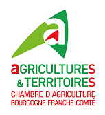
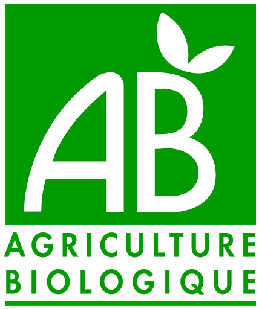
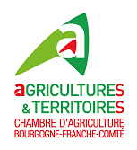
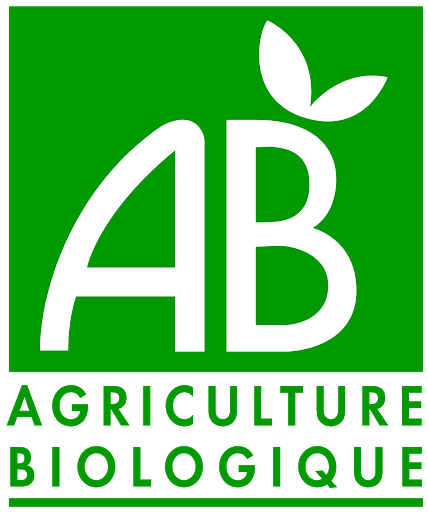

« Le goût dans tous ses états »
La semaine du goût favorise les rencontres entre professionnels/petits producteurs et le “public” partout en France mais elle est aussi un véritable moment de partage du patrimoine culinaire. Cette semaine permet de transmettre certaines valeurs telles que l’éducation au goût, la diversité du goût et des saveurs, la transmission des métiers et savoir-faire, le plaisir du goût ainsi que d'opter pour un nouveau style de vie plus équilibré et durable.
Voir plus 


